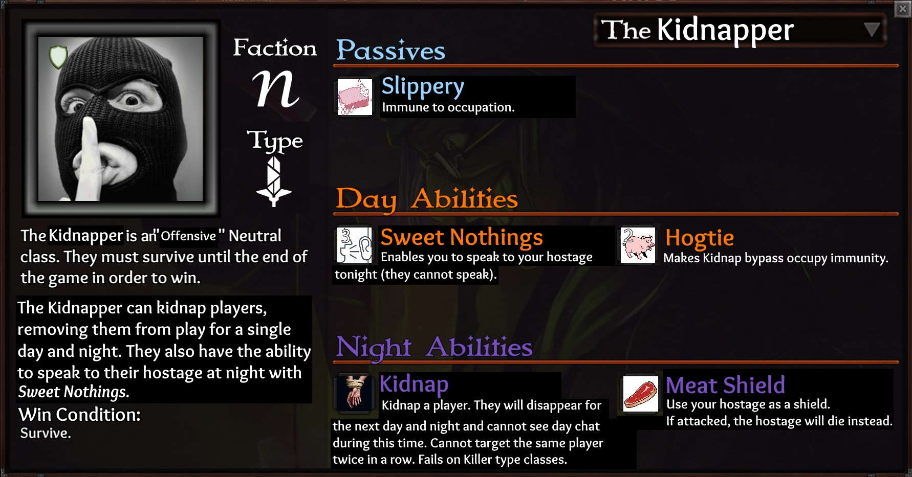

I’m also working on a Neutral Killer version: https://forum.imperium42.com/t/class-suggestion-the-kidnapper-neutral-killer/38358

Unique.
Cannot be converted.
Primary Purposes:
Removes players from the game temporarily, preventing them from partaking in day or night activities. They will be unable to see any messages during the day while captive.
Protects players from being voted onto the stand the following day, or from being targeted by most abilities the following night.
Providing information to hostages with Sweet Nothings.
Secondary Purpose:
Discovering players that are Killer-type classes.
Kidnap takes lowest priority, meaning it won’t prevent any night actions such as occupation or killing of and/or by the target on the night it’s used as it only takes effect the following day. However, the majority of abilities except those listed below will not be able to target the hostage during the following night. Will not work on corpses, Killer-type classes, hiding fools, players protected by CW barrier, or imprisoned players.
Abilities that can target hostages:
Psychic: Link Minds
Noble/Aristocrat/Apostle: Maid Spy, Snoop
Princess: Will-o-Wisp
The charges on the abilities are mostly for show and don’t have too much thought behind them, though in hindsight I’d probably give Meat Shield 3 or even infinite charges. It’s roughly as reliable as a Bear (without killing the attacker unless they’re a Knight), but can only be used if the Kidnapper has a hostage and prevents him from using Kidnap again until the next night. This also means Meat Shield can’t be used again until the night following the next successful Kidnap (and maybe he’s holding a hostage that he doesn’t want to kill off!) There’s many things to consider and I think it creates very interesting dynamics between classes.